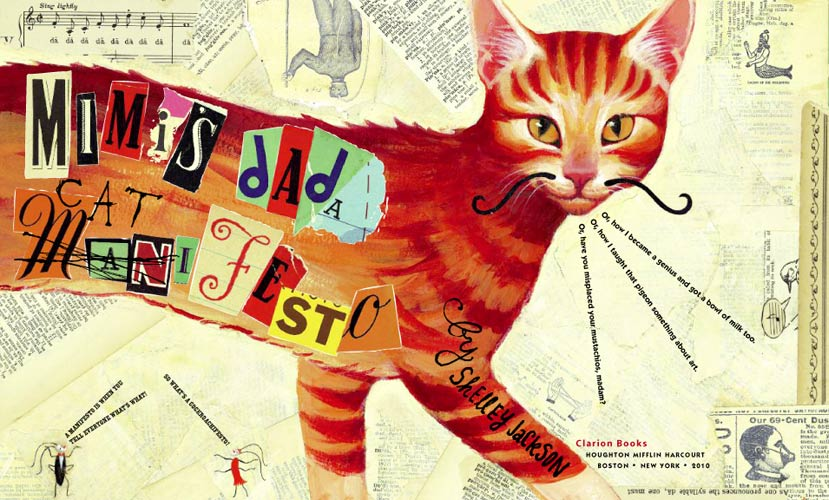
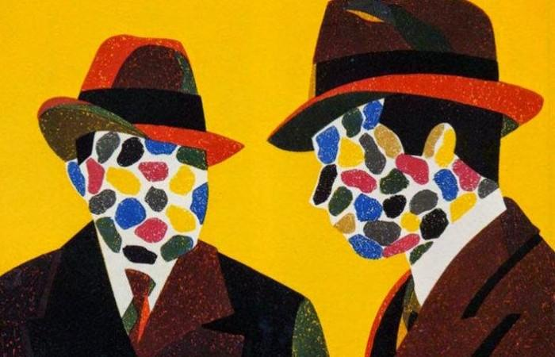

lOS COMIENZOS
Algunos de los artistas mencionados crearon en 1910 una asociación para jóvenes pintores y escultores llamada Tinerimea Artistică (“Los Jóvenes Artistas”), que publicaba crónicas de arte escritas por Arghezi o Bogdan-Piteşti y donde en abril 1912, Marcel Iancu expuso sus primeros diseños. En 1907, llega a Bucarest el joven Samuel Rosenstock (el futuro Tristan Tzara) para empezar sus estudios en el Colegio “Schemitz-Tierin”. Tzara nació en Moldavia, en el pueblo de Moineşti, provincia de Bacău, en el seno de una familia burguesa de judíos rumanos. En 1912, cuando tenía sólo 16 años, edita junto con sus compañeros de instituto, Marcel Iancu e Ion Vinea, una revista de arte y literatura llamada Simbolul (“El Símbolo”). La revista representaba los experimentos de los jóvenes artistas con el Simbolismo y con las nuevas formas de expresión, e incluía contribuciones de figuras conocidas en el mundo cultural de Bucarest como el escritor Ion Minulescu (el mentor de Tzara en esos años) o el pintor Josif Iser (el profesor de pintura de Iancu). La revista tuvo sólo cuatro números, que aparecieron desde el 25 de octubre hasta el 25 de diciembre de 1912. Una situación parecida les ocurrió a las revistas editadas por Ion Minulescu, como Revista Celorlalţi (“La revista de los otros”) e Insula (“La Isla”), que significó el punto de inflexión en el cambio entre el Simbolismo y el protovanguardismo postsimbolista .
FUERTES INFLUENCIAS
Minulescu fue una persona que tuvo bastante influencia sobre Tristan Tzara en ese periodo, tal vez porque era un hombre muy interesado en nuevas ideas y proclamaba la innovación radical. No sólo el Simbolismo europeo había atraído a Ion Minulescu, sino que empezó a tener conexiones con el Futurismo y con el artista italiano Filippo Tommaso Marinetti. Esta información es muy valiosa pensando en el rol que el Futurismo tuvo en el desarrollo artístico de Tzara y la fuerte influencia que ejercitó sobre el Dadaísmo. Tristan Tzara hizo su debut como poeta en Simbolul bajo el pseudónimo S. Samyro y era el editor principal de esta revista. Publicó en total cuatro poemas de inspiración simbolista, en los cuales se notaba la influencia de Minulescu. Su compañero, Ion Vinea, poeta también, era atraído más por el estilo parnasiano y era el encargado junto con Adrian Maniu, un artista conocido, de la parte satírica y política de la publicación. Simbolul agrupó en sus páginas creaciones poéticas de algunos de los más conocidos artistas modernistas de la época y cada número estaba decorado con diseños de Marcel Iancu, Adrian Maniu e Iosif Iser.
HISTORIA
El 5 de febrero 1916 tuvo lugar la primera velada en el famoso Cabaret Voltaire, que los artistas llamaron así como prueba de su respeto para el autor de la sátira Candide, ou l’Optimisme. La prensa de Zúrich publicó la noticia de la apertura de un centro de divertimento artístico Dadá: Bucarest, Zúrich, París. Una Historia del Dadaísmo 275 Cristin a Alex a n dra Vla d sociedad intolerante, dominada por los nacionalismos políticos y la vieja moral conservadora. Cabaret Voltaire era la isla de la libertad de pensamiento, el espacio donde cualquier locura era aceptada y donde de una u otra forma lo viejo se mezclaba con lo nuevo naciendo lo que se entiende por Dadá. El Dadaísmo no fue un estilo o una manera de crear, fue más un modo de vivir, un fenómeno efímero, un principio gobernante que incitaba a la libertad. La actividad predominante en el Cabaret era la literatura, produciendo, presentando y publicando poemas, relatos o canciones. Allí Tristan Tzara se sintió libre de acudir a las formas más inéditas para expresar sus sentimientos e ideas. Era un virtuoso del lenguaje, había estudiado bastante filosofía y publicado muchos poemas antes, pero el Cabaret Voltaire le ofreció la posibilidad de rebelarse contra todo y eso fue exactamente lo que hizo: creó Dadá. La palabra significa en rumano la doble afirmación “sí, sí” y probablemente era usada con frecuencia entre los rumanos del cabaret 9 . La personalidad de Tzara contrastaba con las otras del grupo. Hugo Ball era más racional y tranquilo, se encargaba de alquilar la sala del cabaret y de dirigir las veladas. Richard Huelsenbeck poseía una impertinencia que irritaba y motivaba al mismo tiempo al público. Marcel Iancu era una persona calmada y elegante. Hans Arp poseía un encanto infantil. Emmy Hennings como única mujer del cabaret poseía una personalidad muy fuerte, era cantante y su voz aguda le daba un aire de anti-diva. Tristan Tzara fue la persona dinámica, en constante actividad, que englobaba la seriedad de Ball y la impertinencia de Huelsenbeck y que pronto llegó a ser irremplazable: ¿Qué hubiera sido de Dadá sin los poemas de Tzara, sin su ambición insaciable, sin sus manifiestos, sin hablar de los tumultos que sabía provocar de forma magistral? Declamaba, cantaba y hablaba en francés — también podía hacerlo en alemán, con similar maestría— e interrumpía sus actuaciones con gritos, sollozos y silbidos
